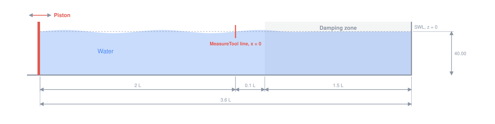
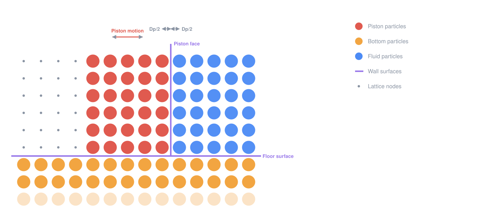
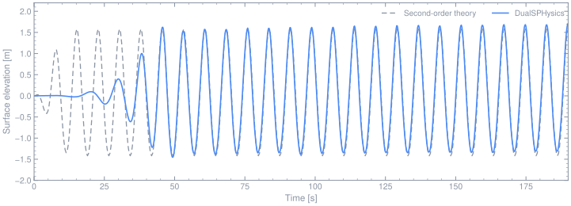

Wave generation¶
Under review by Bonaventura Tagliafierro
This benchmark is a 2-D numerical wave flume. An automatic piston wavemaker at the beginning of the tank generates second-order regular waves, which travel along the flume and are absorbed by a damping zone at its end. The free-surface elevation two wavelengths away from the piston is compared with the second-order theoretical elevation, which DualSPHysics provides for the same position (Madsen, 1971).
The case is supplied in examples/benchmarks/03_WaveGeneration. This page explains its configuration in detail, and in particular how the piston and the bottom are placed on the particle lattice.
What's Covered in This Tutorial
- Choosing the particle spacing so that the depth is an integer number of spacings
- Placing the piston and the bottom on the particle lattice, with their wall surfaces for mDBC
- Second-order regular waves with a piston wavemaker (
wavepaddles) - Passive absorption with a damping zone
- Theoretical elevation from
savemotion
Video: To be updated.
Case configuration¶
Physical setup¶

| Element | Value | Position |
|---|---|---|
| Water depth | 40.00 m | still-water level at \(z=0\), bottom at \(z=-40.00\) |
| Waves | height 3.00 m, period 7.60 s | regular, second order |
| Wavelength \(L\) | 89.53 m | from the linear dispersion relation |
| Piston | mk 10 | face 2 L before \(x=0\) |
| Right wall | 1.6 L after \(x=0\) | |
| Damping zone | 1.5 L | from 0.1 L to the right wall |
| Particle spacing | \(Dp = 0.3008\) |
The case create is 2-D and thus particles are generated only in the plane \(y=0\). The water is labeled mkfluid=0, the bottom and the right wall mkbound=0, and the piston mkbound=10. The flume is open at the top.
With \(kd = 2.81\) and \(H/L = 0.034\), the waves are in intermediate depth, and steep enough for the second-order terms to matter. This information is also available in the Run.out file generated by DualSPHysics.
Physical constants¶
<constantsdef>
<gravity x="0" y="0" z="-9.81" comment="Gravitational acceleration" units_comment="m/s^2" />
<rhop0 value="998" comment="Reference density of the fluid" units_comment="kg/m^3" />
<rhopgradient value="3" comment="Initial density gradient 1:Rhop0, 2:Water column, 3:Max. water height (default=2)" />
<hswl value="0" auto="true" comment="Maximum still water level to calculate speedofsound using coefsound" units_comment="metres (m)" />
<gamma value="7" comment="Polytropic constant for water used in the state equation" />
<speedsystem value="0" auto="true" comment="Maximum system speed (by default the dam-break propagation is used)" />
<coefsound value="20" comment="Coefficient to multiply speedsystem" />
<speedsound value="0" auto="true" comment="Speed of sound to use in the simulation (by default speedofsound=coefsound*speedsystem)" />
<coefh value="1.3" comment="Coefficient to calculate the smoothing length (h=coefh*sqrt(3*dp^2) in 3D)" />
<cflnumber value="0.2" comment="Coefficient to multiply dt" />
</constantsdef>
Fluid: water with reference density 998 kg/m³. rhopgradient=2 indicates that the water is initialized with a hydrostatic density profile computed from the maximum water height.
Speed of sound: the entries with auto="true" are calculated by GenCase. The still-water level hswl is taken from the water depth (40.00 m), and the system speed is the dam-break velocity taken as \(\sqrt{g\,h_{\mathrm{swl}}}\); the speed of sound is then computed considering the multiplier coefsound = 20.
Smoothing length: in 2D, \(h = \mathrm{coefh}\,\sqrt{2}\,Dp = 1.3\sqrt{2}\times0.3008 = 0.553\) m. Each particle interacts with neighbors up to \(2h\) = 3.70·Dp away. This information is used to define the number of boundary layers needed for correct simulations with mDBC and density diffision.
Time step: cflnumber=0.2 scales the time step that the solver computes at every step, to account for the Courant condition.
Geometry definition¶
Real dimensions and particle spacing¶
All dimensions are defined in case/casedef/geometry/predefinition:
<newvarcte depth="40.0" _rem="Water level" />
<newvarcte wavePeriod="7.60" waveH="3.00" _rem="Wave parameters: Period and Wave height" />
<newvarcte regularWaves="25" />
<newvarcte timeMax="regularWaves*wavePeriod" />
<newvarcte timeOut="wavePeriod/40" />
<!-- Dp definition -->
<newvar Dp="waveH/10" />
<setvar Dp="depth/floor(depth/(Dp)+0.5)" />
<newvarcte Dpm="Dp/2" />
<newvarcte wavelength="wavelength(9.81,depth,wavePeriod)" />
<newvarcte domainUp="0.1*wavelength" />
<newvarcte domainBeach="domainUp+1.5*wavelength" _rem="Right wall of the tank" />
<newvarcte pistonPosition="domainBeach-floor((domainBeach+2.0*wavelength)/Dp+0.5)*Dp" />
<newvarcte domainDown="pistonPosition-4*waveH" />
<newvarcte tankTop="3*waveH" _rem="Top of the tank walls above SWL" />
<newvarcte domainWidthY="1.00" />
Particle spacing: Dp starts as one tenth of the wave height, 0.30 m, and is then adjusted with setvar so that the depth is an integer number of spacings: \(Dp = 40/133 = 0.3008\) m. newvar defines a variable that can be changed later, unlike newvarcte that sets them as constants.
Wavelength: the function wavelength(g, depth, period) solves the linear dispersion relation
which gives \(L = 89.53\) m. The rest of the flume is defined proportional to wavelengths, so that it adjusts to any change of the wave period or of the depth.
Flume: the damping zone starts at domainUp = 0.1 L, and the right wall is at domainBeach = 1.6 L. The piston face, pistonPosition, is at 2 L before the origin, and placed at an integer number of spacings from the right wall. The flume continues 4 wave heights behind the piston (domainDown), to leave room for its the piston stroke, thus avoiding its particles to go beyond the domain limits.
The particle lattice¶
GenCase creates particles only at the nodes of a regular lattice (or Cartesian grid) with spacing Dp, initialized at pointref:
<newvarcte PminX="pistonPosition-Dpm-(floor((pistonPosition-domainDown)/Dp+0.5)+1)*Dp" />
<newvarcte PminY="0" PminZ="-depth-Dpm-10*Dp" />
<newvarcte PmaxX="domainBeach+Dpm+10*Dp" PmaxY="0" PmaxZ="20" />
<definition dp="#Dp">
<pointref x="#PminX" y="#PminY" z="#PminZ" comment="Origin of the particle grid" />
<pointmin x="#PminX" y="#PminY" z="#PminZ" />
<pointmax x="#PmaxX" y="#PmaxY" z="#PmaxZ" />
</definition>
The lattice origin: PminX is the piston face minus Dp/2 and an integer number of spacings, and PminZ is the floor minus Dp/2 and ten spacings. Every node is therefore at Dp/2 + k·Dp from the piston face and from the floor. Since the right wall is an integer number of spacings from the piston face, and the depth an integer number of spacings, the right wall and the still-water level also get created exactly halfway between two nodes.
Generation bounds: particles can only be created and retained between pointmin and pointmax. You can imagine these bounds as the definition of the drawing area; the solver domain is set later by using instructions from simulationdomain (see Time step, output, and domain).
The wall surface for mDBC (hdp)¶
<list name="GeometryForNormals">
<setactive drawpoints="0" drawshapes="1" />
<setshapemode>actual | bound</setshapemode>
<setfrdrawmode auto="false" />
<!-- Tank mk=0 -->
<setmkbound mk="0" />
<setnormalinvert invert="true" />
<drawbox>
<boxfill>right|bottom</boxfill>
<point x="#domainDown" y="#Tankpy1" z="#-depth" />
<endpoint x="#domainBeach" y="#Tankpy2" z="#Partpz2" />
</drawbox>
<setnormalinvert invert="false" />
<!-- Piston mk=10 -->
<setmkbound mk="10" />
<drawbox>
<boxfill>right</boxfill>
<point x="#pistonPosition-12*Dp" y="#Tankpy1" z="#-depth" />
<endpoint x="#pistonPosition" y="#Tankpy2" z="#Partpz2" />
</drawbox>
<shapeout file="hdp" />
<resetdraw />
</list>
Generating shapes: the flags drawpoints="0" and drawshapes="1" make the list draw surfaces only for all the commands in the list. shapeout, instead, saves them as WaveGeneration_hdp_Actual.vtk, and resetdraw clears them before other geometries are drawn.
Geometry positioning: the surfaces are drawn directly on the real walls, since these lie between two nodes:
- Tank:
right|bottomtells the commanddrawboxto draw the right wall atdomainBeachand the floor at \(z=-40.00\) m. The floor extends fromdomainDown, behind the piston, to the right wall. - Piston: only the face in contact with the water is drawn (
right), atpistonPosition, from the floor to the top of the walls. Its normal points in \(+x\), towards the water.
Geometry function: the geometry is used to generate normal vectors for the boundary particles, and then used for the internal computation by mDBC.
Drawing particles¶
<!-- Particle generation -->
<setactive drawpoints="1" drawshapes="0" />
<setshapemode>actual | bound</setshapemode>
<setdrawmode mode="full" />
The positions of the particles are defined from the first boundary layer, on the lattice:
<!-- First layer on the grid at Dp/2 -->
<newvarcte Partpx1="PminX+Dp" Partpx2="domainBeach+Dpm" />
<newvarcte Partpz1="-depth-Dpm" Partpz2="PminZ+floor((tankTop-PminZ)/Dp+0.5)*Dp" />
<newvarcte PartPistonx="pistonPosition-Dpm" />
<newvarcte Tankpy1="-domainWidthY/2" Tankpy2="domainWidthY/2" _rem="2D case: only y=0 is generated" />
Partpz1 is the first bottom layer, Dp/2 below the floor, and Partpx2 the first layer of the right wall, Dp/2 behind it. PartPistonx is the first piston column, Dp/2 behind the piston face. Partpx1 is the start of the bottom, one spacing inside the drawing area, and Partpz2 the top of the walls, on the lattice, close to tankTop.
Tank bottom and wall¶
<!-- Tank mk=0 -->
<setmkbound mk="0" />
<drawbox>
<boxfill>right|bottom</boxfill>
<point x="#Partpx1" y="#Tankpy1" z="#Partpz1" />
<endpoint x="#Partpx2" y="#Tankpy2" z="#Partpz2" />
<layers vdp="0,1,2,3,4,5" />
</drawbox>
<shapeout file="tank" />
Bottom: the box passes through the first boundary layer, and right|bottom draws the bottom and the right wall. With the instruction layers vdp="0,1,2,3,4,5", the command adds six layers, one spacing apart, outwards from the box faces.
Piston¶
<!-- Piston mk=10 -->
<setmkbound mk="10" />
<drawbox>
<boxfill>solid</boxfill>
<point x="#PartPistonx-4*Dp" y="#Tankpy1" z="#Partpz1+Dp" />
<endpoint x="#PartPistonx" y="#Tankpy2" z="#Partpz2" />
</drawbox>
<shapeout file="piston" />
Piston: boxfill solid fills the box with boundary particles: seven columns, from PartPistonx, Dp/2 behind the piston face, backwards. Seven columns (5.0·Dp) cover the 2h = 3.68·Dp reach of a fluid particle next to the face.
On the bottom: the piston starts at Partpz1+Dp, one row above the first bottom layer, at the height of the first fluid row (Figure 2). The piston and the bottom never share a node, and while the piston moves back and forth, it always slides over bottom particles.

Water¶
<!-- Fluid -->
<setmkfluid mk="0" />
<fillbox x="#pistonPosition+Dpm+5*Dp" y="0" z="#-Dpm-2*Dp">
<modefill>void</modefill>
<point x="#pistonPosition" y="#Tankpy1-10*Dp" z="#-depth" />
<size x="#domainBeach-pistonPosition" y="#domainWidthY+20*Dp" z="#depth" />
</fillbox>
<shapeout file="" reset="true" />
Water: setmkfluid makes the next drawn particles fluid. fillbox with modefill=void fills the empty nodes connected to the seed point, inside the box; the seed is located close to the piston, below the still-water level. The box covers the flume from the piston face to the right wall, and from the floor to \(z=0\).
Boundary normals¶
<normals>
<distanceh value="2.0" comment="Maximum distance (H*distanceh) to compute normals data (default=2)" />
<geometryfile file="[CaseName]_hdp_Actual.vtk" comment="File with boundary geometry (VTK format). Use NONE to ignore it." />
</normals>
GenCase reads WaveGeneration_hdp_Actual.vtk, and computes a normal for every boundary particle up to \(2h\) from the surfaces. The particles farther from the surfaces never interact with a fluid particle, and need no normal. See the mDBC guide for how the normals are defined.
Checking the generated case¶
GenCase writes the initial state to WaveGeneration_out/ before the simulation starts. Open these files in ParaView to check the case:
WaveGeneration_Fluid.vtk: fluid particlesWaveGeneration_Bound.vtk: the tank and piston particles.WaveGeneration_hdp_Actual.vtk: the floor, the right wall, and the piston face.CfgInit_Normals.vtk: the boundary normals, which should all point towards the water. See Visualise mDBC normals.
Wave generation¶
Piston motion¶
Moving boundary: objreal ref="10" declares the particles with mkbound=10 as a moving object. The motion itself is not defined here (mvnull); it is computed at every step by the wave generator, in <special>, which comes next.
Piston wavemaker¶
<wavepaddles>
<piston>
<mkbound value="10" comment="Mk-Bound of selected particles" />
<waveorder value="2" comment="Order wave generation 1:1st order, 2:2nd order (def=1)" />
<start value="0" comment="Start time (def=0)" />
<duration value="0" comment="Movement duration, Zero is the end of simulation (def=0)" />
<depth value="#depth" comment="Fluid depth (def=0)" />
<pistondir x="1" y="0" z="0" comment="Movement direction (def=(1,0,0))" />
<waveheight value="#waveH" comment="Wave height" />
<waveperiod value="#wavePeriod" comment="Wave period" />
<phase value="0" comment="Initial wave phase in function of PI (def=0)" />
<ramp value="2" comment="Periods of ramp (def=0)" />
<savemotion periods="30" periodsteps="20" xpos="#abs(pistonPosition)" zpos="#-waveH*2" comment="Saves motion data. xpos and zpos are optional. zpos=-depth of the measuring point" />
</piston>
</wavepaddles>
Waves: the piston (mkbound=10) moves along \(x\) (pistondir) to generate regular waves of height 3.00 m and period 7.60 s in 40.00 m of water, from the whole duration of the simulation. The stroke is computed from the wave height with the Biesel transfer function.
Second order: waveorder=2 adds the second-order term of Madsen (1971) to the piston motion, which suppresses the spurious free waves that a first-order motion generates together with the second-order wave. See Wave generation for the theory.
Ramp: ramp=2 increases the motion gradually over the first two periods (15.2 s), so that the piston starts smoothly from rest.
Theoretical output: savemotion writes the theoretical piston motion, free-surface elevation, and velocities for 30 periods, with 20 values per period, at the distance xpos from the piston and the depth zpos below the still-water level.
Damping zone¶
<damping>
<dampingzone>
<limitmin x="#1*domainUp" y="0" z="0" comment="minimum reduction is applied" />
<limitmax x="#domainBeach" y="0" z="0" comment="maximum reduction is applied" />
<overlimit value="0" />
<redumax value="5" comment="Maximum reduction in location limitmax (default=10)" />
</dampingzone>
</damping>
Damping zone: from limitmin to limitmax, the velocity of the fluid particles is progressively reduced, from no reduction to the maximum at the right wall (redumax=5). The zone is 1.5 wavelengths long, and starts just after the measuring line at \(x=0\).
Numerical parameters¶
All parameters are set in case/execution/parameters.
Boundary formulation and time integration¶
<parameter key="Boundary" value="mDBC" comment="Boundary method: DBC, mDBC, MIX:MixBC (default=DBC)" />
<parameter key="SlipMode" value="FS" comment="Slip mode for mDBC: NS:No-slip, FS:Free slip, V0:TanVel=0, M22:mDBC 2022 (default=NS)" />
<parameter key="NoPenetration" value="N" comment="Activate No-Penetration option for mDBC: Y/N (default=N)" />
<parameter key="StepAlgorithm" value="SYM" comment="Step Algorithm: SYM:Symplectic, VER:Verlet (default=SYM)" />
<parameter key="Kernel" value="WC2" comment="Interaction Kernel: WC2:WendlandC2, WC6:WendlandC6 (default=WC2)" />
The walls and the piston use mDBC with free slip (FS); at this scale, the boundary layer along the bottom is much thinner than the particle spacing. The time integration uses the symplectic scheme, and the kernel is Wendland C2.
Viscosity¶
<parameter key="ViscoTreatment" value="LAM" comment="Viscosity formulation: LAM:Laminar, ART:Artificial (default=LAM)" />
<parameter key="Visco" value="1e-6" comment="Viscosity value. Typically 0.01 for Artificial and 1e-6 m^2/s (water kinematic viscosity) for Laminar" />
<parameter key="ViscoBoundFactor" value="1" comment="Multiply viscosity value with boundary (default=1)" />
<parameter key="Turbulence" value="SPS" comment="Turbulence model: NO:None, SPS:Sub-particle scale (default=NO)" />
Viscosity: laminar viscosity with the kinematic viscosity of water, 10⁻⁶ m²/s, and the sub-particle scale (SPS) turbulence model. ViscoBoundFactor=1 applies the same viscosity between fluid and walls.
Density diffusion, divergence cleaning, and shifting¶
<parameter key="DensityDT" value="FO" comment="Density Diffusion Term: NO:None, FO:Fourtakas (default=NO)" />
<parameter key="DensityDTvalue" value="0.10" comment="DDT value (default=0.1)" />
<parameter key="DivCleanKp" value="25" comment="Kappa parameter for Divergence Cleaning (equal to coefsound) (default=0)" />
<parameter key="Shifting" value="4" comment="Shifting mode 0:None, 1:Ignore bound, 2:Ignore fixed, 3:Full, 4:Full advanced (default=0)" />
<parameter key="ShiftAdvCoef" value="-0.01" comment="Coefficient for advanced shifting computation (default=-0.01)" />
<parameter key="ShiftAdvALE" value="N" comment="ALE formulation for advanced shifting: Y/N (default=N)" />
<parameter key="ShiftAdvNCPress" value="Y" comment="Non conservative pressure formulation for advanced shifting: Y/N (default=N)" />
Density diffusion: the Fourtakas formulation with coefficient 0.10 smooths the pressure field.
Divergence cleaning: active, with \(\kappa\) = 25.
Shifting: advanced shifting (4) with coefficient −0.01, and the non-conservative pressure formulation. Shifting keeps the particle distribution regular over the 25 wave periods of the simulation. See the advanced shifting guide.
Time step, output, and domain¶
<parameter key="CoefDtMin" value="0.001" comment="Coefficient to calculate minimum time step dtmin=coefdtmin*h/speedsound (default=0.05)" />
<parameter key="DtIni" value="#2*Dp/1500" comment="Initial time step. Use 0 to default use (default=h/speedsound)" units_comment="seconds" />
<parameter key="TimeMax" value="#timeMax" comment="Time of simulation" units_comment="seconds" />
<parameter key="TimeOut" value="#timeOut" comment="Time out data" units_comment="seconds" />
<parameter key="RhopOutMin" value="700" comment="Minimum density valid (default=700)" units_comment="kg/m^3" />
<parameter key="RhopOutMax" value="1300" comment="Maximum density valid (default=1300)" units_comment="kg/m^3" />
<simulationdomain comment="Defines domain of simulation (default=Uses minimum and maximum position of the generated particles)">
<posmin x="default" y="default" z="default" comment="e.g.: x=0.5, y=default-1, z=default-10%" />
<posmax x="default" y="default" z="default + 10%" />
</simulationdomain>
Duration and output: the simulation runs for 25 wave periods, 190 s, and saves the particles every \(T/40\) = 0.19 s, in double precision (SavePosDouble=Y).
Time step: is computed automatically at every step. DtIni sets the initial time step to 2·Dp/1500, and CoefDtMin=0.001 sets the minimum value.
Excluded particles: a fluid particle whose density leaves the range 700–1300 kg/m³ is removed from the simulation, with a warning. Particles that leave the domain are removed in the same way.
Domain: default determines the solver domain as the box around all the generated particles, and z="default + 10%" raises its top by 10% of its height, to keep the wave crests and the splashes at the walls inside it.
Running the simulation¶
Input files¶
Work in examples/benchmarks/03_WaveGeneration/:
| File | Purpose |
|---|---|
WaveGeneration_Def.xml |
Case definition, read by GenCase |
wWaveGeneration_win64_GPU.bat |
Windows: GenCase, GPU simulation, and post-processing |
If WaveGeneration_out/ already exists, the script offers to delete it and run again, to run only the post-processing, or to stop. The first option removes the existing results.
Windows¶
From the case folder, run wWaveGeneration_win64_GPU.bat. Its main lines are:
set name=WaveGeneration
set dirout=%name%_out
set diroutdata=%dirout%\data
set dirbin=../../../bin/windows
set gencase="%dirbin%/GenCase_win64.exe"
set dualsphysicsgpu="%dirbin%/DualSPHysics6.0_win64.exe"
set partvtk="%dirbin%/PartVTK_win64.exe"
set partvtkout="%dirbin%/PartVTKOut_win64.exe"
set measuretool="%dirbin%/MeasureTool_win64.exe"
rem Executes GenCase to create initial files for simulation.
%gencase% %name%_Def %dirout%/%name% -save:all
if not "%ERRORLEVEL%" == "0" goto fail
rem Executes DualSPHysics to simulate SPH method.
%dualsphysicsgpu% -gpu %dirout%/%name% %dirout%
if not "%ERRORLEVEL%" == "0" goto fail
Pre-processing: GenCase reads WaveGeneration_Def.xml and writes the case to WaveGeneration_out/WaveGeneration. -save:all also saves the initial particles as VTK.
Simulation: the solver runs on the GPU (-gpu), and writes its results to WaveGeneration_out, together with the theoretical output of savemotion.
Post-processing¶
Particle visualization¶
rem Executes PartVTK to create VTK files with particles.
set dirout2=%dirout%\particles
%partvtk% -dirdata %diroutdata% -savevtk %dirout2%/PartFluid -onlytype:-all,+fluid -continue:1
if not "%ERRORLEVEL%" == "0" goto fail
rem Executes PartVTKOut to create VTK files with excluded particles.
%partvtkout% -dirdata %diroutdata% -savevtk %dirout2%/PartFluidOut -SaveResume %dirout2%/_ResumeFluidOut
if not "%ERRORLEVEL%" == "0" goto fail
PartVTK: writes the fluid particles only (-onlytype:-all,+fluid); -continue:1 skips files that already exist.
PartVTKOut: writes the particles excluded during the run, and a summary CSV.
Free-surface elevation¶
set dirout2=%dirout%\post
%measuretool% -dirdata %diroutdata% -pointsdef:ptls[x=0.0:0:1,y=0:0:1,z=-6.00:0.01:1200] -onlytype:-all,+fluid -elevation:0.5 -savecsv %dirout2%/
Sampling line: -pointsdef:ptls[...] defines a list of points, each coordinate given as start, step, and number of points: here 1200 points at \(x=0\) and \(y=0\), from \(z=-6.00\) m upwards, 0.01 m apart.
Elevation: -elevation:0.5 returns the free surface along the line, where the kernel sum of the fluid particles drops below 0.5, computed from the fluid particles only (-onlytype:-all,+fluid). The result is written as a CSV file to post/.
Results and validation¶
Theoretical elevation¶
savemotion writes WaveGeneration_out/WavePaddle_mkb0010.csv, with the columns:
| Column | Content |
|---|---|
Time [s] |
time |
Position [m] |
displacement of the piston, second order, with the ramp |
Elevation_o1 [m] |
first-order free-surface elevation at xpos |
Elevation_o2 [m] |
second-order free-surface elevation at xpos: the first order plus the second-order term |
Velx_o1 [m/s], Velz_o1 [m/s] |
first-order velocity at xpos and zpos |
Velx_o2 [m/s], Velz_o2 [m/s] |
second-order velocity at xpos and zpos |
Position: xpos is the distance from the piston to \(x=0\), about 2 L, the position of the MeasureTool line. zpos = −6.00 m is the depth at which the velocities are computed; it does not affect the elevation.
Time: the file has one row every \(T/40\) = 0.19 s, twice the output interval of the particles.
Comparison¶
The numerical elevation from post/ and Elevation_o2 are compared over 0–190 s, both measured from the still-water level at \(z=0\) (Figure 3). The first periods include the ramp, and they arrive at the measuring line with an expected delay due to the travel time from the piston.

References¶
◆ Madsen, O. S. (1971). On the generation of long waves. Journal of Geophysical Research, 76(36), 8672-8683. DOI: 10.1029/JC076i036p08672.